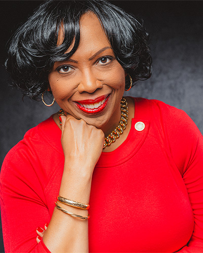

As a nationally recognized consultant and leadership educator, I bring keen analytical abilities and agile thinking to board service. I have in-depth knowledge of human capital utilization, employment best practices, organizational effectiveness, and strategy formulation and evaluation. This knowledge gives me a clear understanding of the complexities organizations face. I bring the capacity to analyze challenges from the perspectives of varied stakeholders. Because I believe that open dialogue is vital, I am comfortable posing difficult questions that spark discussion and enhance decision making among my board colleagues.
Post-graduate institution providing education in the humanistic tradition. I chair the board's Institutional Advancement and Governance Committees.
National foundation funding research into treatments and cures for brain diseases.
Provider of post-acute care, rehabilitation, independent living, and memory care, owning and operating facilities in New York, Pennsylvania, Illinois, and Washington.
Evaluates progress in improving the quality of nursing home and assisted living facility care in the State of Maryland.
Works to ensure that the nation's physician workforce racially and ethnically represents the population it serves.
Well-established Maryland nonprofit providing housing for low-wage workers and those at risk of homelessness, in partnership with developers, corporations, philanthropists, and community partners.
I bring significant and sustained experience providing consulting to executives in many industry sectors. I partner with leaders to implement sound initiatives that positively impact a range of business issues. I deliver advice and counsel focused on reaching the organization's most positive, powerful potential. Areas of expertise follow:
I am instrumental in developing and implementing organizational change initiatives. I devise programmatic interventions to change corporate culture while enhancing performance and productivity. I help clients develop and refine the competencies required to meet current and anticipated business demands.
I combine board service with two decades of consulting to private and public sector organizations as well as nonprofits, which makes me adept at addressing environmental, social, and governance issues. I ably participate in identifying the varied paths available to reach an enterprise's ESG objectives without ignoring profit and growth. Having served on the governance committee of three boards, I contribute knowledge of best practices in this arena. My sustained success as an entrepreneur provides the ability to deeply understand questions of viable innovation, scale, and emerging strategy. I lead organizations through transformational change, delivering results that positively impact alignment between strategy and operations, talent management, pipeline planning, and the creation of healthy organizational cultures.
Comprehensive approaches to developing, executing, and evaluating enterprise strategy.
Executive coaching that equips leaders with individualized, substantive tools for business challenges.
Succession planning, talent management, and employment best practices.
Organizational effectiveness, culture, and change across sectors.
Featured in business publications that focus on leadership, strategy, and organizational effectiveness.
The SmikleSpeaks podcast reaches leaders and learners in 24 countries across the globe.
Serving private and public sector organizations as well as nonprofits nationwide.
I am actively engaged in my community. I provide ad hoc resource development to organizations serving the poor and underserved, and coordinate national food drives feeding low-income senior citizens through Food on the 15th. Through Alpha Kappa Alpha Sorority, Inc., I participate in activities advancing scholarship, social justice, poverty amelioration, and economic empowerment. I bring in-depth public policy experience from four years as a lobbyist for the League of Women Voters, having served among a group of twenty lobbyists presenting the League's nonpartisan positions to elected officials in the U.S. Senate and House of Representatives. Through the Executive Alliance, a selective membership organization accelerating the success of accomplished women, I have mentored mid-career women preparing for advancement.